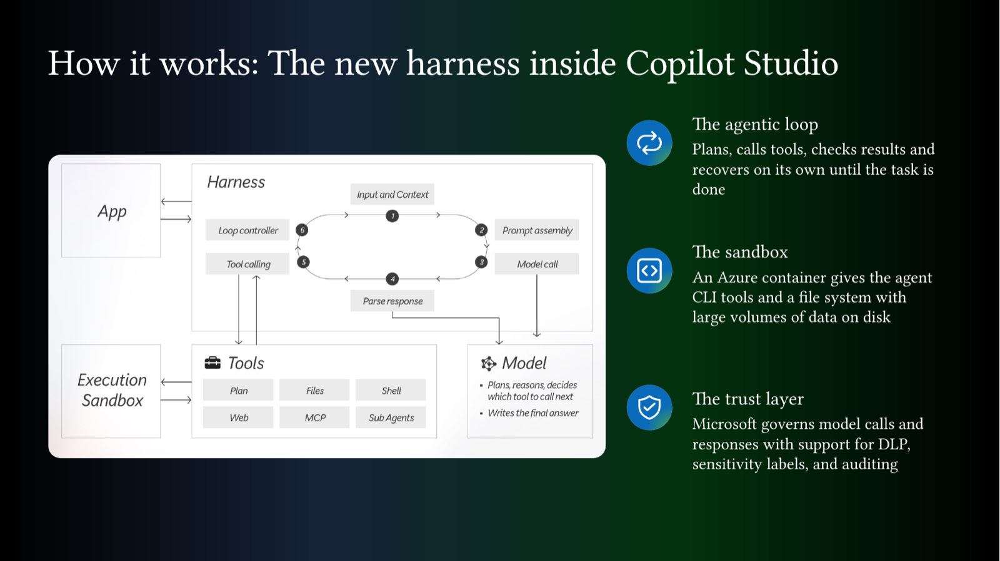

动态任务子智能体并行扇出
无需单独创建或发布子机器人，主控智能体在单会话边界内按需并发拉起 3 个轻量 Claude Haiku 5.5 隔离盲审 Apex、Meridian 与 Nimbus 标书，再一句话派生 Sol 模型跨厂商挑刺复核（预计 2026 年 12 月 GA）[3][4]。
面向《Ignite 2026 | ABS 内部分享安排》『方案构建』板块第 08 场（主讲人 Wells Zhang，2026 年 12 月 7 日 周一 11:30–12:00，时长 30 分钟），本文以主讲专场 BRK378（Copilot Managed Runtime 正式商用）为中轴，贯通 BRK259（Microsoft Copilot Harness 执行内核）、BRK382（诺华 7.5 倍扩张与规模化双轨治理）与 BRK285（Azure 支持团队 18 个月全自主生产排障）[1][3][5][7]。全文拆解企业应用与智能体如何告别本地端口孤岛和脆弱原型，沿 Build ➔ Host ➔ Scale & Govern 主线跨越生产信任鸿沟，并附逐分钟卡点的 30 分钟实战演讲蓝图与口播金句骨架 [1][5][7]。
---
title: From Build to Production：Harness 内核与 Copilot 托管运行时全栈实战（Ignite 2026 ABS 第 08 场） || From Build to Production: Harness & Copilot Managed Runtime Blueprint (Ignite 2026 ABS Session 08)
eyebrow: Ignite 2026 ABS 内部分享 · 方案构建第 08 场（Wells Zhang · 12月7日 11:30–12:00） || Ignite 2026 ABS Internal Sharing · Solution Build Session 08 (Wells Zhang · Dec 7, 11:30–12:00)
brand: Study Room Power Platform & Copilot Studio || Study Room Power Platform & Copilot Studio
date: 2026-11-26
topic: copilot-studio
tags:
- Microsoft Ignite 2026
- Copilot Managed Runtime
- Microsoft Copilot Harness
- BRK378
- BRK259
- BRK382
- BRK285
relations:
- ignite-2026-brk378-host-apps-anywhere-new-copilot-managed
- ignite-2026-brk259-copilot-harness-powers-copilot-studio
- ignite-2026-brk382-deploy-solutions-scale-power-platform-copilot
- ignite-2026-brk285-agent-works-enterprise-ready
strict_i18n: true
strict_density: true
summary: 面向 Ignite 2026 ABS『方案构建』第 08 场（Wells Zhang，12月7日 11:30–12:00），深度融合 BRK378、BRK259、BRK382 与 BRK285，打通 Build ➔ Host ➔ Scale 生产闭环与 30 分钟实战演讲骨架。 || Crafted for Ignite 2026 ABS Solution Build Session 08 (Wells Zhang, Dec 7, 11:30–12:00), uniting BRK378, BRK259, BRK382, and BRK285 into one Build-to-Production architecture and 30-minute talk blueprint.
lead: 面向《Ignite 2026 | ABS 内部分享安排》『方案构建』板块第 08 场（主讲人 Wells Zhang，2026 年 12 月 7 日 周一 11:30–12:00，时长 30 分钟），本文以主讲专场 BRK378（Copilot Managed Runtime 正式商用）为中轴，贯通 BRK259（Microsoft Copilot Harness 执行内核）、BRK382（诺华 7.5 倍扩张与规模化双轨治理）与 BRK285（Azure 支持团队 18 个月全自主生产排障）[1][3][5][7]。全文拆解企业应用与智能体如何告别本地端口孤岛和脆弱原型，沿 Build ➔ Host ➔ Scale & Govern 主线跨越生产信任鸿沟，并附逐分钟卡点的 30 分钟实战演讲蓝图与口播金句骨架 [1][5][7]。 || Designed for Session 08 of the Ignite 2026 ABS Internal Sharing Series in the Solution Build track (Speaker: Wells Zhang, Monday, December 7, 2026, 11:30–12:00, 30 minutes), this article anchors on lead breakout BRK378 (Copilot Managed Runtime GA) while synthesizing BRK259 (Microsoft Copilot Harness), BRK382 (Novartis 7.5× scale and dual-track governance), and BRK285 (Azure Support's 18-month autonomous resolution rollout) [1][3][5][7]. It traces how enterprise apps and agents escape localhost silos and fragile prototypes across the Build -> Host -> Scale & Govern spine, complete with a minute-by-minute 30-minute run-of-show and speaker soundbite script [1][5][7].
panel_label: ABS 方案构建第 08 场 · 四专场合成蓝图 || ABS Session 08 · Four-Session Synthesis Brief
panel_title: 重铸推理内核，随处受管托管，凭证据挣得生产自主权 || Rebuild the Harness, Host Anywhere, and Earn Production Autonomy
panel_desc: 将 BRK259 的单循环容器内核、BRK378 的跨工具 Git 托管、BRK382 的默认绿区账本与 BRK285 的爬山评测收束为一套 30 分钟可讲透的架构体系 [1][3][5][7]。 || Unifies BRK259's container harness, BRK378's Git-backed hosting, BRK382's default green-zone FinOps, and BRK285's hill-climbing loop into a 30-minute technical narrative [1][3][5][7].
panel:
- Build 内核换代（BRK259） — 基于 Copilot SDK 与会话级 Azure 容器重铸，代码分析涨 47.5 个百分点、输入词元省 45%，六类钩子钉死确定性红线 [3][4] || Build: Copilot Harness (BRK259) — Rebuilt on Microsoft Copilot SDK and Azure containers, lifting code analysis +47.5 pts while cutting input tokens 45% under six deterministic hooks [3][4]
- Host 随处托管（BRK378 主讲） — 五大入口汇聚单一 Git 远程仓与 1,500+ 连接器，Lovable 纯前端直发零碰数据，VS Code 免密克隆无缝接力 [1][2] || Host: Managed Runtime GA (BRK378 Lead) — Five authoring surfaces share one Git remote and 1,500+ connectors, pairing zero-data-touch Lovable deploys with keyless VS Code relay [1][2]
- Scale 治理与自主（BRK382 + BRK285） — 诺华活跃智能体增 7.5×、10 美元半小时生成超级 CoE，配合低高代码状态分工与六步爬山闭环挣得有界自主 [5][6][7][8] || Scale & Govern (BRK382 + BRK285) — Combines Novartis's 7.5× agent surge and $10 30-minute CoE app with hybrid durable state and 6-step hill climbing for bounded autonomy [5][6][7][8]
metrics:
- 新内核代码分析与词元实测 || Harness Gain & Token Cut | +47.5 pts / -45% | BRK259 约 500 道真实业务流程离线评测（Sonnet 4.6），83%–88% 输入词元命中缓存 [3][4] || Across ~500 customer offline evals on Sonnet 4.6 with 83%–88% prompt cache hit rates (BRK259) [3][4]
- 受管连接器与生态覆盖 || Connectors & Ecosystem | 1,500+ / 40,000+ | BRK378 预置 1,500+ 动作级连接器，接入服务 4 万余家企业的 Lovable 平台且零数据外泄 [1][2] || 1,500+ per-action governed connectors plus 20-minute Lovable bind across 40,000+ orgs with zero data exposure (BRK378) [1][2]
- 诺华规模与自主演进周期 || Novartis Scale & FACS Span | 7.5× / 18 个月 || 7.5× / 18 Months | BRK382 诺华活跃智能体达 1,366 个；BRK285 Azure 支持排障历时 18 个月落地有界全自主 [5][7] || Novartis reached 1,366 active agents (BRK382) while Azure Support matured FACS over 18 months (BRK285) [5][7]
style:
accent: "#ea580c"
teal: "#0d8f8c"
---
## #build-to-prod-spine 01 / Four-Session Synthesis :: 从本地原型孤岛到企业生产闭环：四专场三阶架构总纲 || From Localhost Prototypes to Production: The Four-Session Architectural Spine
生成式工具已经把“写出一个能演示的前端页面或对话机器人”压缩到了几分钟，但企业工程团队却普遍卡在两道生产断层前 [1][7]。第一道是**宿主断层**：业务人员与开发者在个人电脑上跑通的微应用困在本地 `localhost` 端口，既没有企业目录单点登录，也拿不到合规的数据连接审批 [1]。第二道是**信任断层**：正如 BRK285 开场两次现场举手投票所揭示的反差——全场绝大多数团队都搭出过能给出漂亮回答的智能体，但几乎没人敢免去人工逐单审批、直接放它进生产系统执行写操作 [7]。 || Generative tools have compressed drafting a working user interface or chat bot into minutes, yet enterprise teams routinely stall at two production chasms [1][7]. The first is the **hosting chasm**: micro-apps built on laptops remain trapped on `localhost` ports without corporate single sign-on or governed data access [1]. The second is the **trust chasm**: as exposed by two opening audience polls in BRK285, most teams have built an agent that gives a fluent answer, yet almost none dare let it execute production actions without step-by-step human approval [7].
在《Ignite 2026 | ABS 内部分享安排》『方案构建』板块第 08 场（主讲人 Wells Zhang，12 月 7 日周一 11:30–12:00）中，我们不再孤立复述单场特性，而是将四场官方专场组装为一条 **Build ➔ Host ➔ Scale & Govern** 生产交付流水线 [1][3][5][7]。其中 **BRK259** 提供带确定性钩子的单循环执行内核，主讲场 **BRK378** 提供终结本地孤岛的跨入口托管底座。**BRK382** 与 **BRK285** 则分别补齐租户级治理账本与关键业务的有界自主演进方法论 [1][3][5][7]。 || For Session 08 of the Ignite 2026 ABS Solution Build internal sharing series (Speaker: Wells Zhang, Monday, Dec 7, 11:30–12:00), we assemble four interlocking breakouts into one **Build -> Host -> Scale & Govern** pipeline instead of reciting isolated feature lists [1][3][5][7]. **BRK259** supplies the reasoning harness with deterministic hooks while lead session **BRK378** provides the Git-backed universal hosting runtime. **BRK382** and **BRK285** then establish tenant-wide governance, FinOps ledgers, and earned production autonomy [1][3][5][7].
| 演进阶梯与议程定位 || Lifecycle Stage & Role | 绑定 Ignite 2026 专场与讲者 || Bound Session & Speakers | 解决的核心生产断层 || Core Blocker Solved | 关键工程机制与量化实证 || Signature Mechanism & Verified Metric |
| --- | --- | --- | --- |
| **1. Build（重铸内核与契约先行）** || **1. Build (Kernel & Contract)** | **BRK259**（Alice Appleton）+ **BRK285** 旅程一（Tim Schaeps） || **BRK259** (Alice Appleton) + **BRK285** Journey 1 | 2023 串行对话脚手架看不见全局目标；脆弱单容器原型盲堆功能撞上合规红线 [3][7] || 2023 chat scaffolding lacks holistic planning; fragile prototypes break against cloud policies [3][7] | 基于 Copilot SDK + Azure 容器重铸，代码分析 **+47.5 pts**、输入词元 **-45%**；六类钩子拦截超 **£2,000** 订单 [3][4] || Rebuilt on Copilot SDK + Azure containers (**+47.5 pts** code analysis, **-45%** input tokens); 6 hooks block **>£2,000** POs [3][4] |
| **2. Host（随处构建统一托管 · 主讲）** || **2. Host (Universal Runtime · Lead)** | **BRK378**（Clay Wesener, Emma Cooper, Malavika Tadeusz） || **BRK378** (Clay Wesener, Emma Cooper, Lovable PM) | 多工具生成应用困在 `localhost` 孤岛；业务原型转交研发时面临推倒重写的断崖 [1][2] || AI-generated apps trapped on `localhost`; domain prototypes hit a pro-code rewrite cliff [1][2] | 11 月 17 日 GA；五大入口共享单一 Git 远程仓与 **1,500+** 连接器；Lovable 纯前端直发零触碰企业数据 [1][2] || Nov 17 GA; 5 surfaces share one Git remote & **1,500+** connectors; Lovable ships pure React with zero data touch [1][2] |
| **3. Scale（双轨绿区与开放账本）** || **3. Scale (Green Zones & FinOps)** | **BRK382**（Zohar Raz, Ryan Jansen, Austin Laugesen, 诺华） || **BRK382** (Zohar Raz, Ryan Jansen, Austin Laugesen, Novartis) | 全员放开导致默认环境失控与僵尸泛滥；算力点数成黑盒且传统 CoE 部署笨重 [5][6] || Unmanaged default-environment sprawl, opaque credit bills, and multi-day CoE setup friction [5][6] | 诺华在用智能体激增 **7.5×**（达 **1,366** 个）；MAC 首日默认绿区 + `<1 小时`告警；**$10 / 30 分钟**生成超级 CoE [5][6] || Novartis active agents grew **7.5×** (**1,366**); MAC default green zone + `<1h` alerts; **$10 / 30m** OpenAPI CoE app [5][6] |
| **4. Govern & Evolve（有界全自主）** || **4. Govern & Evolve (Autonomy)** | **BRK285** 旅程二（Arun Masilamani, Ali Ijaz, Omprakash Adudodla） || **BRK285** Journey 2 (Azure Support FACS Team) | 跨天复杂工单状态易丢失；线上依然出现幻觉，靠修改提示词“许愿”毫无效果 [7][8] || Multi-day support state drops; live hallucinations persist despite wishful prompt tweaking [7][8] | Azure 支持历时 **18 个月**落地 FACS：Studio 6 专员推理 + Durable Functions 持久状态 + 六步爬山闭环 [7][8] || **18-month** Azure FACS journey: Studio 6-role reasoning + Durable Functions state + 6-step hill climbing [7][8] |
:::figure { src: "./media/build-to-prod-four-session-topology.figure.json", title: "From Build to Production：四专场融合的三层内核、托管与规模治理拓扑 || From Build to Production: Three-Plane Harness, Managed Runtime & Scale Topology" }
图 1：顶层以 Microsoft Copilot Harness 单循环沙盒与构建期前置策略统一承接五大创作入口（BRK259/BRK378）；中层收口至共享 Git 远程仓、1,500+ 受管连接器与低高代码混合持久底座（BRK378/BRK285）；底层由 M365 管理中心默认绿区、单一 OpenAPI 账本与六步爬山评测闭环护航规模化投产（BRK382/BRK285）[1][3][5][7]。 || Figure 1: Top plane unites five policy-aware entry surfaces on the Microsoft Copilot Harness (BRK259/BRK378); middle plane converges on one Git remote, 1,500+ connectors, and hybrid durable state (BRK378/BRK285); bottom plane enforces MAC default green zones, OpenAPI FinOps, and 6-step hill climbing (BRK382/BRK285) [1][3][5][7].
:::
## #build-copilot-harness 02 / Build: Harness & Guardrails :: Build 阶段（BRK259 + BRK285）：重铸 Copilot SDK 容器内核，把确定性钩子嵌入自主循环 || Build Phase (BRK259 + BRK285): Rebuilding on Copilot SDK Containers with Deterministic Hooks
迈向生产的第一步，是彻底认清“对话脚手架”与“自主工程内核”的代差 [3]。Alice Appleton 在 BRK259 中披露，2023 年初设计的经典底座（Standard Harness）为了弥补早期模型能力短板，强行把用户意图切碎为串行子提示词；模型既看不见全局业务目标，也无法在遇到数万行财务表格时写脚本脱敏解析 [3][4]。面对推理模型与工具内嵌循环的成熟，团队果断放弃在旧底座上贴补丁，转而基于与 GitHub、Microsoft Foundry、Copilot Cowork 及 Copilot Code 同源的 **Microsoft Copilot SDK** 从零重铸执行内核，并在每次会话启动时动态拉起专属 **Azure 隔离容器（Execution Sandbox）** [3][4]。 || Crossing into production begins by retiring chat-era prompt scaffolding [3]. As Alice Appleton detailed in BRK259, the 2023 Standard harness split requests into rigid sequential sub-prompts, blinding the model to holistic business goals and choking on massive tabular files [3][4]. Rather than patching legacy scaffolding, the team rebuilt from scratch on the **Microsoft Copilot SDK**—shared across GitHub, Foundry, Cowork, and Copilot Code—provisioning an isolated **Azure container sandbox** with shell, code execution, and local disk on every session [3][4].
这套新内核打破了“自主循环调模次数翻倍必然烧穿预算”的直觉担忧 [3][9]。在约 **500 道源于真实客户流程的离线评测集**（固定使用 Claude Sonnet 4.6）中，得益于容器命令行接管重算与单循环增量上下文拼接，新内核在四大业务场景全部大涨的同时，反而把最昂贵的输入词元砍掉了近一半 [3][4][9]： || Empirical benchmarks overturned the fear that multi-step agent loops multiply token bills [3][9]. Evaluated across **~500 customer-derived business-process cases** held constant on Claude Sonnet 4.6, offloading heavy file slicing to container disk and incremental context assembly lifted pass rates across every category while slashing expensive input tokens nearly in half [3][4][9]:
$$
\begin{aligned}
\Delta Q_{\text{code}} &= +47.5\text{ pts}, & \Delta Q_{\text{file}} &= +28.2\text{ pts}, & \Delta T_{\text{input}} &= -45.0\% \\
R_{\text{cache}} &\in [83\%,\, 88\%], & R_{\text{recover}} &\in [84\%,\, 91\%]
\end{aligned}
$$
其中提示词缓存命中率高达 **83%–88%**（使成本加权输入词元净降 15%–21%），且工具调用异常时有 **84%–91%** 的回合能在循环内自主重算恢复 [3][9]。为了应对前沿实验室每周至少发布一款新模型的节奏，平台默认开启 **Auto 帕累托选模**，在管理员策略范围内横跨 Anthropic、OpenAI、Mistral 与 SpaceXAI 动态寻优；微软研发团队自身更用 **32 个 Copilot Studio 智能体、47 条协作连接与 6 个函数式共享专家**组成内部软件工厂，全天候自动分流故障、生成补丁并巡检账单来构建 Copilot Studio 本体 [3][4]。 || Prompt cache hits reached **83%–88%** (cutting cost-weighted input tokens by 15%–21%), while **84%–91%** of failed tool turns self-recovered mid-loop [3][9]. With frontier labs shipping new models weekly, default **Auto Pareto routing** optimizes quality versus cost across Anthropic, OpenAI, Mistral, and SpaceXAI; internally, the engineering team dogfoods **32 Copilot Studio agents, 47 connections, and 6 shared helpers** round-the-clock to build Copilot Studio itself [3][4].
:::insight-grid { cols: 3, title: "Build 阶段三大生产级基石：动态子智能体、确定性钩子与架构契约前置 || Three Build-Phase Pillars: Dynamic Sub-Agents, Lifecycle Hooks & Upfront Contracts" }
::card 01 · BRK259
### 动态任务子智能体并行扇出 || Dynamic Task Agents Fan-Out
无需单独创建或发布子机器人，主控智能体在单会话边界内按需并发拉起 3 个轻量 `Claude Haiku 5.5` 隔离盲审 Apex、Meridian 与 Nimbus 标书，再一句话派生 `Sol` 模型跨厂商挑刺复核（预计 2026 年 12 月 GA）[3][4]。 || Spins up ephemeral workers at runtime with zero child bots to publish—fanning out three isolated `Claude Haiku 5.5` bid reviewers in parallel before spawning `Sol` for cross-provider critique (targeting Dec 2026 GA) [3][4].
::card 02 · BRK259
### 六类生命周期钩子硬阻断 || Six Deterministic Lifecycle Hooks
不同于模型可选择不调的普通工具，Hook 在固定切点百分百触发：采购演示中 `Session start` 预载英国成本中心，而唯一拥有拦截改参权的 `Before tool` 钩子当场计算并拒绝超出 **£2,000** 红线的 8 套入职包订单（返回 `continue: false`）[3][4]。 || Firing 100% deterministically unlike optional LLM tools, `Session start` loads cost-center rules while `Before tool`—the sole blocking/rewriting event—halts an 8-kit order exceeding **£2,000** (`continue: false`) before any PO is created [3][4].
::card 03 · BRK285 + BRK378
### 契约先行与构建期策略感知 || Contract-First & Policy-Aware Build
BRK285 警示切勿在单容器原型上盲堆界面（曾因 Cosmos DB 公网端点违例直接瘫痪），而是挂载 **Microsoft Learn MCP** 先检 CAF/WAF 规范落盘契约；BRK378 更将管理中心禁用连接器直接注入构建上下文，从源头杜绝造出无法上线的废品 [1][7]。 || Rather than stacking UI onto fragile prototypes, teams wire **Microsoft Learn MCP** in VS Code to ground ADRs in CAF/WAF first (BRK285), while CMR injects admin connector rules into build agents upfront so makers never burn tokens on unshippable code (BRK378) [1][7].
:::
<div class="b2p-media-grid">
<article class="b2p-media-card" data-present-surface="unframed">
<div class="b2p-media-frame">
<img src="./media/brk259-slide08-harness-loop.png" alt="BRK259 Slide 8 official diagram showing App, 6-step Harness loop, Execution Sandbox, Tools, Model, and Trust Layer" loading="lazy" />
</div>
<div class="b2p-media-body">
<span class="b2p-media-badge" data-zh="BRK259 官方课件 · Slide 08" data-en="BRK259 Official Slide · Slide 08">BRK259 官方课件 · Slide 08</span>
<h4 data-zh="Microsoft Copilot Harness 六步自愈循环与容器信任层" data-en="Six-Step Agentic Loop, Azure Sandbox & Trust Layer">Microsoft Copilot Harness 六步自愈循环与容器信任层</h4>
<p data-zh="展示输入组装、模型调用、沙盒工具执行与外层凭据隔离/Purview DLP 审计如何闭环运行 [3][4]。" data-en="Shows prompt assembly, model calls, container CLI execution, and outer Purview DLP credential isolation [3][4].">展示输入组装、模型调用、沙盒工具执行与外层凭据隔离/Purview DLP 审计如何闭环运行 [3][4]。</p>
</div>
</article>
<article class="b2p-media-card" data-present-surface="unframed">
<div class="b2p-media-frame">
<img src="./media/brk378-admin-center-inventory.jpg" alt="BRK378 Slide 18 official screenshot of Microsoft 365 Admin Center All Apps inventory tracking 492 managed apps and 4 blocked apps" loading="lazy" />
</div>
<div class="b2p-media-body">
<span class="b2p-media-badge is-accent" data-zh="BRK378 官方课件 · Slide 18 GA" data-en="BRK378 Official Slide · Slide 18 GA">BRK378 官方课件 · Slide 18 GA</span>
<h4 data-zh="Microsoft 365 管理中心：全域托管应用盘点与一键隔离" data-en="M365 Admin Center: 492 Managed Apps & Instant Block">Microsoft 365 管理中心：全域托管应用盘点与一键隔离</h4>
<p data-zh="所有构建入口产出的应用自动登记入账（实机展示 492 款纳管、4 款高危拦截），彻底告别隐形本地端口 [1][2]。" data-en="Every entry surface auto-registers into one inventory (492 apps tracked, 4 blocked) with zero localhost blind spots [1][2].">所有构建入口产出的应用自动登记入账（实机展示 492 款纳管、4 款高危拦截），彻底告别隐形本地端口 [1][2]。</p>
</div>
</article>
</div>
此外，BRK259 的 **会话变量（Variables）** 与 **MCP / A2A 双向协议通道** 进一步收紧了构建边界：创作者可按 `Department = HR` 等变量条件动态裁剪向模型暴露的知识源与工具，并将 Copilot Studio 智能体通过 Microsoft Entra OAuth 2.0 委托身份直接调用本地/VNet 私有代理（入向已 GA），或反向发布为远程 MCP 与 A2A 服务器（预计 2027 年 Q1 GA）[3][4]。 || Complementing hooks, **scoped Variables** and **bidirectional MCP / A2A channels** tighten runtime exposure: makers gate sensitive HR knowledge strictly when `Department = HR` and connect inbound to Foundry, M365 Agents SDK, or VNet-isolated A2A peers (GA) while publishing Studio agents outbound as Entra OAuth-secured MCP/A2A servers (targeting Q1 CY27 GA) [3][4].
## #host-managed-runtime 03 / Host: Copilot Managed Runtime :: Host 阶段主讲核心（BRK378）：五大入口共写单一 Git 仓，打通业务创作与全栈接力 || Host Phase Lead Focus (BRK378): Five Entry Surfaces on One Git Repo Without a Rewrite Cliff
作为第 08 场分享的主讲重心，2026 年 11 月 17 日正式全面商用（GA）的 **Copilot 托管运行时（Copilot Managed Runtime，简称 CMR）** 正面拆除了横亘在“自然语言原型”与“企业生产系统”之间的高墙 [1][2]。产品总经理 Clay Wesener 在 BRK378 开场给出了一项极具冲击力的工程事实：团队混合使用协同画布（Cowork）、Copilot Studio、命令行与 OpenAI、Claude Opus 等多款模型构建了整场所有演示应用，但**没有任何一款成品运行在 `localhost` 本地端口上** [1][2]。只要一键发布至托管运行时，每款应用便自动获得 Microsoft Entra 身份认证域名、后台专属 **Git 远程源码仓库**，并同步挂载 **1,500 余个受管连接器**与管理中心治理台账 [1][2]。 || Serving as the centerpiece of Session 08, **Copilot Managed Runtime (CMR)**—generally available since November 17, 2026—tears down the wall between AI prototypes and production hosting [1][2]. Opening BRK378, GM Clay Wesener highlighted a telling milestone: although the team built session demos across Cowork, Copilot Studio, the CLI, and mixed models including OpenAI and Claude Opus, **not a single resulting app ran on `localhost`** [1][2]. Every published artifact automatically inherits a Microsoft Entra authenticated URL, a backing **Git remote repository**, access to **1,500+ governed connectors**, and live Microsoft 365 Admin Center visibility [1][2].
在工作流内构建侧，首席产品经理 Emma Cooper 演示了两条递进路径 [1][2]。第一条路径是在正式商用的 **Copilot Cowork** 中调取 **Work IQ** 组织上下文与 **Figma 设计插件**，几分钟内生成像素还原的《Q4 2026 Atlas 项目路线图》，并通过代号 **Rayfin** 的前沿预览能力一键落盘至 **Microsoft Fabric 数据库**或 SharePoint 列表 [1][2]。第二条路径是在 **Copilot Studio（Apps 现已 GA）** 中构建基于 Dataverse 的 **Gauge 现场巡检分析应用**（以及通过 36 项自动构建检查的 Voyage Desk 核保台）：顶部用低时延**行内提示词函数（Inline LLM）**提炼风险摘要，右侧内嵌完整 **Gauge 风险顾问智能体**跨表追查北场（North Yard）逾期整改项 [1][2]。 || For in-flow creation, Principal PM Emma Cooper demonstrated two escalating tiers [1][2]. First, prompting inside **Copilot Cowork (GA)** pulls **Work IQ** context and **Figma plugin** mockups to ship the interactive *Q4 2026 Atlas Roadmap* in minutes, persisting state into a **Microsoft Fabric database via Rayfin** or SharePoint lists [1][2]. Second, **Apps in Copilot Studio (GA)** powers the Dataverse-backed **Gauge Field Inspections** app alongside *Voyage Desk* (verified by 36 automated build checks). Its dashboard pairs a low-latency **inline LLM summary** on top with an embedded **Gauge Risk Advisor Agent** side panel that cross-references overdue North Yard corrective actions [1][2].
:::comparison { title: "消除低代码与跨生态孤岛：三方平台直发与全栈 Git 无缝接力（BRK378） || Eliminating Tool Silos: Zero-Data-Touch 3P Publishing & Keyless Pro-Dev Git Relay (BRK378)" }
::versus 开放生态直发：Lovable + Managed Platform SDK || Open 3P Ecosystem: Lovable Direct Publish
### 20 分钟租户绑定，仅推纯 React 前端且零触碰企业数据 || 20-Minute Admin Bind, Pure React UI & Zero 3P Data Access
服务超 **40,000 家企业**（含德国电信与英伟达）、累计创建逾 **7,000 万个项目**的 Lovable 现场演示原生集成：IT 管理员约 **20 分钟**配通工作区后，创作者生成新员工入职应用一键直发 CMR；**Lovable 仅推送编译后的纯 React 前端，全程零权限接触底层 Excel 或业务数据**，一切鉴权与读写严格闭环在客户 M365 租户内 [1][2]。 || Powering **40,000+ businesses** and **70M+ projects**, Lovable binds to CMR in roughly **20 minutes**: makers prompt an Entra-personalized onboarding app and publish straight to Microsoft's runtime—**shipping only the React frontend while Lovable never touches underlying tenant data** [1][2].
::versus 专业研发接力：CLI + VS Code + Code Agents { highlight: true } || Pro-Dev Relay: CLI, VS Code & Code Agents { highlight: true }
### 免密钥克隆同一套 TypeScript/React 源码仓，彻底终结推倒重写 || Keyless GCM Clone of Clean React/TS Source—Zero Rewrite Cliff
全栈开发者无需索要 API 密钥或个人令牌，直接通过命令行与 **Git Credential Manager（GCM）** 将业务人员在 Studio 中生成的 Gauge 巡检应用克隆至本地 VS Code [1]。工程师在标准 `Home.tsx` 与 Hooks 上新增巡检地理位置地图，在带安全横幅的本地开发服验证后即可原路推回共享生产域名 [1]。团队还可部署自带模型与编排器的 **Code Agents**，免 Azure 额外配置直接连通 Agent 365 [2]。 || Software engineers use the CLI and **Git Credential Manager** to clone the Studio-built Gauge app into VS Code without PAT tokens [1]. They add an inspection geolocation map onto clean `Home.tsx` React code, verify it on a flagged local dev server, and push updates straight back to the live URL [1]. Teams can also deploy custom **Code Agents** wired to Agent 365 with zero Azure setup [2].
:::
## #scale-govern-autonomy 04 / Scale, FinOps & Autonomy :: Scale & Govern 阶段（BRK382 + BRK285）：双轨绿区、算力账本与 18 个月爬山自愈 || Scale & Govern Phase (BRK382 + BRK285): Dual Green Zones, FinOps & 18-Month Hill Climbing
当五六种构建工具同时向数千名员工敞开大门，如何既不把每份个人效率草稿都当成达·芬奇画《蒙娜丽莎》那样审批三年，又不让默认环境沦为失控的影子泥潭 [5]？在 BRK382 中，拥有约 **77,000 名员工**、服务全球 **3.04 亿患者**的瑞士药企**诺华（Novartis）**交出了真实租户答卷 [5][6]。通过“护栏内放行”与 10 周公民开发者训练营（约 500 名活跃毕业生实现近 50% 生产转化），诺华主租户自 2025 年 10 月起在用 Copilot Studio 智能体从 182 个激增至 **1,366 个（7.5×）**，月活创作者升至 **3,312 人（2.6×）** [5][6]。同期 Power Apps 扩至 **27,862 款**（含 50 款新代码应用），并靠**周期性所有者确权（Periodic Owner Attestation）**自动清退僵尸资产 [5][6]。 || When thousands of employees build across half a dozen tools, how do enterprises avoid treating every personal draft like Leonardo da Vinci's three-year *Mona Lisa* without letting the default environment descend into chaos [5]? In BRK382, **Novartis** (**77,000 associates**, **304M patients**) shared primary tenant telemetry [5][6]. Combining guardrailed enablement with 10-week Citizen Developer cohorts (~500 graduates converting ~50% to production), active Copilot Studio agents surged **7.5× from 182 to 1,366** while monthly makers rose **2.6× to 3,312** [5][6]. Power Apps simultaneously reached **27,862** (including 50 Code apps), kept clean through **periodic owner attestation** [5][6].
支撑这种规模扩张的底座是 **PPAC 专家绿区**与 **M365 管理中心（MAC）首日默认绿区**的双轨协同 [1][5][6]。在 Power Platform 侧，管理员利用最多 25 条优先级环境路由将创作者分流至个人开发沙盒，勾选启用**高级连接器策略（ACP）**不仅能封禁 SQL `Delete/Update` 高危动作，更能强制要求仅放行 **OAuth** 身份认证，配合 Purview 审计必读欢迎条款与内部申诉助手 **Ask Mica** 前置引导 [5][6]。而在跨工具的 Copilot Managed Runtime 侧，绿区从租户**第一天起默认开启**，开箱仅放行核心办公连接器；Austin Laugesen 现场点击测试按钮证明，一旦代码试图私自外呼未授权外部域名（如 `Bing`），**Managed Host** 会依据默认**严格内容安全策略（CSP）**当场掐断连接 [1][5]。部署与运维则沿“单环境零配置 `Dev -> Test -> Prod` 三阶段”平滑晋升至金融级跨环境严管流水线，并由低延迟 **Monitor** 在 **1 小时内**捕获异常直推 Teams 或 ServiceNow 工单 [5][6]。 || Backing this velocity is a dual green-zone architecture pairing **PPAC expert routing** with **CMR's on-by-default green zone in MAC** [1][5][6]. In PPAC, up to 25 priority routing rules steer makers into personal sandboxes governed by **Advanced Connector Policies (ACP)**—blocking SQL `Delete/Update` actions and enforcing **OAuth-only authentication** alongside Purview-audited welcome terms and Microsoft's internal **Ask Mica** assistant [5][6]. In CMR, the green zone ships **on by default on day one**, scoping apps to core M365 connectors while the **Managed Host's strict Content Security Policy (CSP)** blocks unauthorized outbound calls (such as `Bing` in Demo 3) live at runtime; workloads graduate from built-in `Dev -> Test -> Prod` targets to hardened cross-environment pipelines monitored by **within-1-hour** high-sensitivity alerts [1][5][6].
<div class="b2p-media-grid">
<article class="b2p-media-card" data-present-surface="unframed">
<div class="b2p-media-frame">
<img src="./media/brk382-mac-cost-management.png" alt="BRK382 Slide 46 official screenshot of Microsoft 365 admin center Copilot Cost management overview showing 2.5M total credits, 1.5M prepaid, 1M pay-as-you-go, and user spending limit alerts" loading="lazy" />
</div>
<div class="b2p-media-body">
<span class="b2p-media-badge" data-zh="BRK382 官方课件 · Slide 46" data-en="BRK382 Official Slide · Slide 46">BRK382 官方课件 · Slide 46</span>
<h4 data-zh="MAC 全局双轨账本：2.5M 点数透视与限额预警" data-en="MAC FinOps Ledger: 2.5M Credits & Threshold Alerts">MAC 全局双轨账本：2.5M 点数透视与限额预警</h4>
<p data-zh="配合创作者端顶栏点数器（88 credits）与 Cowork /cost 命令，统一纳管 1.5M 预付 + 1M 按量及 5,000 点业务上限 [1][5][6]。" data-en="Pairs maker-side counters (88 credits) and /cost commands with 1.5M prepaid + 1M PAYG tracking and 5,000-credit pilot caps [1][5][6].">配合创作者端顶栏点数器（88 credits）与 Cowork /cost 命令，统一纳管 1.5M 预付 + 1M 按量及 5,000 点业务上限 [1][5][6]。</p>
</div>
</article>
<article class="b2p-media-card" data-present-surface="unframed">
<div class="b2p-media-frame">
<img src="./media/brk285-slide29-reference-arch.jpg" alt="BRK285 Slide 29 official diagram of the Resolution Agent Reference Architecture across Dynamics 365, Power Platform, Copilot Studio, MCP, and Azure" loading="lazy" />
</div>
<div class="b2p-media-body">
<span class="b2p-media-badge is-accent" data-zh="BRK285 官方课件 · Slide 29" data-en="BRK285 Official Slide · Slide 29">BRK285 官方课件 · Slide 29</span>
<h4 data-zh="Azure 支持 FACS 生产参考拓扑：低代码推理 + 全代码状态" data-en="Azure Support FACS Topology: Studio Reasoning + Azure State">Azure 支持 FACS 生产参考拓扑：低代码推理 + 全代码状态</h4>
<p data-zh="Copilot Studio 协同 6 大专职角色，经 APIM 与 4 路 MCP 桥连接 Durable Functions / Cosmos DB 跨天状态与 Foundry 门禁 [7][8]。" data-en="Copilot Studio coordinates 6 specialist roles across 4 APIM-secured MCP bridges to Durable Functions/Cosmos state and Foundry gates [7][8].">Copilot Studio 协同 6 大专职角色，经 APIM 与 4 路 MCP 桥连接 Durable Functions / Cosmos DB 跨天状态与 Foundry 门禁 [7][8]。</p>
</div>
</article>
</div>
在财务与管理自动化层面，BRK378 与 BRK382 共同补齐了透明算力账本：创作者在 Studio 左上角直看实时消耗（如 `88 credits`）或在 Cowork 输入 `/cost` 即刻查账；管理员则在 MAC `Cost management` 中设定诸如现场巡检 **5,000 点数**的业务线预算上限，一屏统管全租户 `2.5M` 点数（`1.5M` 预付 + `1M` 按量）与 `≥90%` 阈值预警 [1][5][6]。更惊艳的是，微软用**单一权威 OpenAPI 规范**按月自动同步生成版本化 REST API、`.NET/Python` SDK、`Admin V2` 连接器、**15 组 PAC CLI 命令**与 **Cowork 管理插件**——Zohar 现场演示导入顾问团队打磨的包，仅耗资 **10 美元**、用时 **30 分钟**便编译出一款运行在 CMR 上的现代化全栈超级 CoE 治理应用（`aka.ms/powerplatform360`）[5][6]。 || On FinOps and admin automation, makers see live burn via Studio's top-left counter (`88 credits`) or `/cost` in Cowork while admins set **5,000-credit** pilot caps and monitor `2.5M` monthly credits (`1.5M` prepaid + `1M` PAYG) with `≥90%` alerts in MAC [1][5][6]. Crucially, one **authoritative OpenAPI specification** auto-generates monthly REST docs, `.NET/Python` SDKs, the `Admin V2` connector, **15 PAC CLI groups**, and the **Cowork Admin Plugin**—enabling Zohar to compile a modern CoE Toolkit superset app on CMR in **30 minutes for $10** (`aka.ms/powerplatform360`) [5][6].
而针对最严苛的关键业务自主执行，BRK285 披露了微软 Azure 支持团队历时 **18 个月**将全自主客户服务（FACS）推上生产的终极心法 [7][8]：团队没有推倒低代码重写，而是用 **Copilot Studio** 调度意图、证据合成、质量审校等 6 类专职角色，把跨数天乃至数周的单案持久状态与超时升级兜底交给 **Azure Durable Functions 与 Cosmos DB**（实机秒级免问订阅号查出 Contoso `09:08` 部署后 `0 of 3` 健康实例并引导回滚）[7][8]。面对上线后依然存在的幻觉，团队摒弃“让提示词更努力思考”的无效许愿，建立起**六步爬山（Hill Climbing）闭环**——将人工坐席改稿原因、专家评分量表（Rubric）与**逐轮追踪工作台（Trace Studio）**日志聚类为失败分桶，在 **3×6 控制矩阵**与两条授权铁律（*绝不授予无法解释的权限，绝不授予无法撤销的权限*）约束下逐个场景放行有界自主 [7][8]。 || Finally, for mission-critical autonomous execution, BRK285 unpacked Azure Support's **18-month** rollout of Fully Autonomous Customer Service (FACS) [7][8]: keeping **Copilot Studio** for six-specialist reasoning while delegating multi-day case state and timeout fallbacks to **Azure Durable Functions and Cosmos DB** (pinpointing `0 of 3` healthy instances after a `09:08` deployment without asking Contoso for a subscription ID) [7][8]. Confronting persistent live hallucinations, the team replaced wishful prompt-tweaking with a **six-step hill-climbing loop**—clustering reviewer edit reasons, SME rubrics, and **Trace Studio** logs into failure buckets to unlock bounded autonomy one scenario at a time under two iron rules: *never grant authority you cannot explain, and never grant authority you cannot reverse* [7][8].
## #abs-30min-blueprint 05 / 30-Minute Talk Blueprint :: ABS『方案构建』第 08 场实战指南：30 分钟时间分配与演讲金句骨架 || ABS Session 08 Run-of-Show: 30-Minute Time Allocation & Speaker Soundbite Script
为助力 2026 年 12 月 7 日（周一）11:30–12:00 的 30 分钟内部分享高密度控场，我们将整场《From Build to Production: Harness & Managed Runtime》切分为节奏紧凑的五幕（`3 + 7 + 9 + 7 + 4 = 30 分钟`），确保主讲场 **BRK378** 占据最饱满的黄金中段，同时首尾严丝合缝咬合 **BRK259**、**BRK382** 与 **BRK285** 的硬核证据 [1][3][5][7]： || To pace the 30-minute internal talk on Monday, December 7, 2026 (11:30–12:00) with zero filler, we structure *From Build to Production: Harness & Managed Runtime* into five crisp acts (`3 + 7 + 9 + 7 + 4 = 30 minutes`), giving lead session **BRK378** the central nine-minute spotlight while bookending it with empirical proof from **BRK259**, **BRK382**, and **BRK285** [1][3][5][7]:
:::figure { src: "./media/talk-30min-pacing-blueprint.figure.json", title: "ABS 第 08 场（11:30–12:00）五幕 30 分钟节奏分配与四专场映射图 || ABS Session 08 (11:30–12:00) Five-Act 30-Minute Pacing & Session Mapping" }
图 2：30 分钟分享采用『3 分钟破题立主线 ➔ 7 分钟讲透 Harness 内核 ➔ 9 分钟重锤 CMR 随处托管主讲 ➔ 7 分钟拆解诺华与默认绿区账本 ➔ 4 分钟收束 FACS 爬山闭环与周一行动项』的黄金漏斗结构 [1][3][5][7]。 || Figure 2: Paces the 30-minute slot across a 3m opening hook, 7m Copilot Harness deep dive, 9m Copilot Managed Runtime lead spotlight, 7m Novartis & MAC FinOps governance, and 4m FACS hill-climbing close [1][3][5][7].
:::
点击下方交互式演讲导播台的五幕标签或进度色块，即可逐幕检视精确到分钟的**上台口播金句、核心演示论据、幕间转场衔接词**及本知识库四篇配套深潜直链： || Click any act tab or timeline segment in the interactive speaker run-of-show below to inspect verbatim stage soundbites, minute-by-minute talking points, transition cues, and direct links to all four companion deep dives:
:::sandbox { id: "abs-talk-blueprint", canvas: false, script: "./talk-blueprint.js", style: "./talk-blueprint.css", title: "ABS 内部分享第 08 场（Wells Zhang · 30 分钟）五幕演讲卡点与金句导播台 || ABS Session 08 (Wells Zhang · 30-Min) Interactive Five-Act Speaker Run-of-Show", desc: "自由切换 11:30–12:00 五幕议程，查阅每幕口播金句、四专场硬指标锚点、幕间转场话术与原版 PPTX 直链。 || Switch across all five 11:30–12:00 acts for verbatim speaker soundbites, empirical metrics, transition cues, and official PPTX decks." }
纯静态交互式演讲蓝图导播台：内置 ABS 方案构建第 08 场议程横幅、3+7+9+7+4 分钟比例时间轴、五幕口播金句与四场 Ignite 2026 信源直达入口。 || Pure static interactive run-of-show sandbox featuring the ABS Session 08 banner, proportional 30-minute timeline bar, verbatim soundbites, and four Ignite 2026 session links.
:::
:::callout { title: "带回项目组的周一行动三步清单（ABS 方案构建交付沉淀） || Monday-Morning Three-Step Action Checklist for Solution Architects" }
1. **先立架构契约与确定性钩子，再写业务功能（Build）** — 在 VS Code 接入 Microsoft Learn MCP 对齐云采用与安全红线；凡涉及金额审批、外部写操作或敏感字段的工具调用，一律挂载 `Before tool` / `After tool` 生命周期钩子，拒绝靠自然语言提示词“祈祷合规” [3][7]。 || **1. Lock Contracts & Deterministic Hooks First (Build)** — Ground designs via Microsoft Learn MCP and gate side-effecting or sensitive tools with `Before tool` / `After tool` hooks rather than trusting natural-language prompt wishes [3][7].
2. **全面告别 localhost 孤岛，统一收归受管 Git 底座（Host）** — 将 Cowork、Copilot Studio 及花 20 分钟完成租户绑定的外部三方工具（如 Lovable）全部指向 Copilot Managed Runtime；利用共享 React/TypeScript Git 远程仓库与 Fabric (Rayfin) 持久化，实现业务创作者与全栈工程师零重写无缝接力 [1][2]。 || **2. Eliminate Localhost Silos on One Git Runtime (Host)** — Route Cowork, Studio, and 20-minute bound 3P builders like Lovable onto Copilot Managed Runtime so makers and VS Code engineers collaborate on one Git repo backed by Fabric (Rayfin) [1][2].
3. **开启双轨绿区账本，凭爬山证据逐场景放权（Scale & Govern）** — 核验 M365 管理中心默认绿区连接器与严格 CSP，按业务线挂载 5,000 点数试点限额或耗资 10 美元生成超级 CoE；对跨天复杂流程实施“Studio 推理 + Azure 持久状态”分工，用人工改稿分桶与重放门禁逐个场景挣得有界全自主 [1][5][7]。 || **3. Enforce Green-Zone FinOps & Earn Autonomy via Hill Climbing (Scale & Govern)** — Baseline MAC default green-zone CSP and 5,000-credit caps (or spin up the $10 CoE app), pair Studio reasoning with Durable Functions state, and unlock unreviewed autonomy one benchmarked scenario at a time [1][5][7].
:::
## 参考资料：四场 Ignite 2026 官方一手信源 || References: Four Official Microsoft Ignite 2026 Primary Sources
1. **Clay Wesener, Emma Cooper & Malavika Balachandran Tadeusz (Microsoft Ignite 2026 BRK378 · 主讲专场)** — https://ignite.microsoft.com/en-US/sessions/1787856630704001Ep9J-1791588308254001CRyh | 《Host apps from anywhere with the new Copilot Managed Runtime》45 分钟官方点播实录与逐字稿（2026-11-18） || Lead Session BRK378 official 45-minute recording and verbatim transcript on Copilot Managed Runtime GA (Nov 18, 2026)
2. **Microsoft Ignite 2026 BRK378 Official Slide Deck & Stream** — https://medius.microsoft.com/video/asset/PPT/c5c8ac76-0384-4a0c-acf5-83488136a4f1 | BRK378 原版 34 页 PPTX 课件（含 11 月 17 日 GA 矩阵、Voyage Desk 36 项检查、Fabric Rayfin 持久化与管理中心 492 款应用实拍） || Official 34-slide BRK378 presentation deck covering Nov 17 GA capabilities, Lovable integration, and MAC inventory captures
3. **Alice Appleton (Microsoft Ignite 2026 BRK259 · 关联专场)** — https://ignite.microsoft.com/en-US/sessions/1787856612459001EfZu-1791588174633001COAZ | 《See how the Microsoft Copilot harness powers Copilot Studio》38 分 36 秒官方点播实录与双语逐字稿（2026-11-20） || Related Session BRK259 official recording and transcript on the Microsoft Copilot SDK harness and Azure container sandboxes (Nov 20, 2026)
4. **Microsoft Ignite 2026 BRK259 Official Slide Deck** — https://medius.microsoft.com/video/asset/PPT/57bd65b7-dce0-4d9d-9d20-70a3b284e9bd | BRK259 原版 32 页 PPTX 讲义（含 500 道离线评测 +47.5 pts / -45% 数据、32 智能体软件工厂、动态子智能体与六类 Hooks 契约） || Official 32-slide BRK259 deck detailing offline eval gains, 32-agent internal factory, Dynamic Task Agents, and 6 lifecycle hooks
5. **Zohar Raz, Ryan Jansen, Austin Laugesen & Nicholas Balestrino (Microsoft Ignite 2026 BRK382 · 关联专场)** — https://ignite.microsoft.com/en-US/sessions/1787856631314001Eynh-1791814918515001Cspr | 《Deploy solutions at scale with Power Platform or Copilot Managed Runtime》47 分钟官方点播实录与诺华访谈逐字稿（2026-11-20） || Related Session BRK382 official 47-minute recording featuring Novartis's 77,000-associate telemetry and four governance demos (Nov 20, 2026)
6. **Microsoft Ignite 2026 BRK382 Official Slide Deck** — https://medius.microsoft.com/video/asset/PPT/8698eb3b-5f0b-4284-bf98-188eb338d15e | BRK382 原版 54 页 PPTX 课件（含诺华 7.5× 增长报表、PPAC/MAC 双轨绿区、小时级 Monitor 告警、2.5M 点数账本与单一 OpenAPI 规范） || Official 54-slide BRK382 deck covering Novartis scale metrics, Managed Host CSP blocking, FinOps ledgers, and the $10 CoE app
7. **Ali Ijaz, Arun Masilamani, Tim Schaeps & Omprakash Reddy Adudodla (Microsoft Ignite 2026 BRK285 · 关联专场)** — https://ignite.microsoft.com/en-US/sessions/1787856616329001EyM8-1791588352535001C8TA | 《Your agent works. Now make it enterprise-ready.》51 分钟官方点播实录与双旅程逐字稿（2026-11-19） || Related Session BRK285 official 51-minute recording dissecting Superagents contracts and Azure Support's 18-month FACS rollout (Nov 19, 2026)
8. **Microsoft Ignite 2026 BRK285 Official Slide Deck** — https://medius.microsoft.com/video/asset/PPT/048e7075-9b0a-458d-b28b-3fa6113f248b | BRK285 原版 38 页 PPTX 讲义（含三阶成熟度、3×6 控制矩阵、FACS 低高代码参考拓扑与六步爬山迭代图） || Official 38-slide BRK285 deck covering the 3×6 autonomy-control matrix, FACS reference topology, and 6-step hill-climbing loop
9. **Ben Appleby (Microsoft Copilot Studio Engineering Blog)** — https://www.microsoft.com/en-us/copilot/blog/copilot-studio/how-the-microsoft-copilot-harness-in-copilot-studio-helps-agents-finish-the-job/ | 《How the Microsoft Copilot harness in Copilot Studio helps agents finish the job》83%–88% 提示词缓存命中率与 84%–91% 工具失败自愈工程解析（2026-11-09） || Companion engineering deep dive on Azure container sandboxes, 83%–88% prompt cache hit rates, and 84%–91% self-recovery (Nov 9, 2026)
01 / Four-Session Synthesis
生成式工具已经把“写出一个能演示的前端页面或对话机器人”压缩到了几分钟，但企业工程团队却普遍卡在两道生产断层前 [1][7]。第一道是宿主断层：业务人员与开发者在个人电脑上跑通的微应用困在本地 localhost 端口，既没有企业目录单点登录，也拿不到合规的数据连接审批 [1]。第二道是信任断层：正如 BRK285 开场两次现场举手投票所揭示的反差——全场绝大多数团队都搭出过能给出漂亮回答的智能体，但几乎没人敢免去人工逐单审批、直接放它进生产系统执行写操作 [7]。
在《Ignite 2026 | ABS 内部分享安排》『方案构建』板块第 08 场（主讲人 Wells Zhang，12 月 7 日周一 11:30–12:00）中，我们不再孤立复述单场特性，而是将四场官方专场组装为一条 Build ➔ Host ➔ Scale & Govern 生产交付流水线 [1][3][5][7]。其中 BRK259 提供带确定性钩子的单循环执行内核，主讲场 BRK378 提供终结本地孤岛的跨入口托管底座。BRK382 与 BRK285 则分别补齐租户级治理账本与关键业务的有界自主演进方法论 [1][3][5][7]。
| 演进阶梯与议程定位 | 绑定 Ignite 2026 专场与讲者 | 解决的核心生产断层 | 关键工程机制与量化实证 |
|---|---|---|---|
| 1. Build（重铸内核与契约先行） | BRK259（Alice Appleton）+ BRK285 旅程一（Tim Schaeps） | 2023 串行对话脚手架看不见全局目标；脆弱单容器原型盲堆功能撞上合规红线 [3][7] | 基于 Copilot SDK + Azure 容器重铸，代码分析 +47.5 pts、输入词元 -45%；六类钩子拦截超 £2,000 订单 [3][4] |
| 2. Host（随处构建统一托管 · 主讲） | BRK378（Clay Wesener, Emma Cooper, Malavika Tadeusz） | 多工具生成应用困在 localhost 孤岛；业务原型转交研发时面临推倒重写的断崖 [1][2] |
11 月 17 日 GA；五大入口共享单一 Git 远程仓与 1,500+ 连接器；Lovable 纯前端直发零触碰企业数据 [1][2] |
| 3. Scale（双轨绿区与开放账本） | BRK382（Zohar Raz, Ryan Jansen, Austin Laugesen, 诺华） | 全员放开导致默认环境失控与僵尸泛滥；算力点数成黑盒且传统 CoE 部署笨重 [5][6] | 诺华在用智能体激增 7.5×（达 1,366 个）；MAC 首日默认绿区 + <1 小时告警；10 / 30 分钟**生成超级 CoE [5][6] @@BILINGUAL_SEP@@ Novartis active agents grew **7.5×** (**1,366**); MAC default green zone + @@CODE_3@@ alerts; **10 / 30m OpenAPI CoE app [5][6] |
| 4. Govern & Evolve（有界全自主） | BRK285 旅程二（Arun Masilamani, Ali Ijaz, Omprakash Adudodla） | 跨天复杂工单状态易丢失；线上依然出现幻觉，靠修改提示词“许愿”毫无效果 [7][8] | Azure 支持历时 18 个月落地 FACS：Studio 6 专员推理 + Durable Functions 持久状态 + 六步爬山闭环 [7][8] |
02 / Build: Harness & Guardrails
迈向生产的第一步，是彻底认清“对话脚手架”与“自主工程内核”的代差 [3]。Alice Appleton 在 BRK259 中披露，2023 年初设计的经典底座（Standard Harness）为了弥补早期模型能力短板，强行把用户意图切碎为串行子提示词；模型既看不见全局业务目标，也无法在遇到数万行财务表格时写脚本脱敏解析 [3][4]。面对推理模型与工具内嵌循环的成熟，团队果断放弃在旧底座上贴补丁，转而基于与 GitHub、Microsoft Foundry、Copilot Cowork 及 Copilot Code 同源的 Microsoft Copilot SDK 从零重铸执行内核，并在每次会话启动时动态拉起专属 Azure 隔离容器（Execution Sandbox） [3][4]。
这套新内核打破了“自主循环调模次数翻倍必然烧穿预算”的直觉担忧 [3][9]。在约 500 道源于真实客户流程的离线评测集（固定使用 Claude Sonnet 4.6）中，得益于容器命令行接管重算与单循环增量上下文拼接，新内核在四大业务场景全部大涨的同时，反而把最昂贵的输入词元砍掉了近一半 [3][4][9]：
其中提示词缓存命中率高达 83%–88%（使成本加权输入词元净降 15%–21%），且工具调用异常时有 84%–91% 的回合能在循环内自主重算恢复 [3][9]。为了应对前沿实验室每周至少发布一款新模型的节奏，平台默认开启 Auto 帕累托选模，在管理员策略范围内横跨 Anthropic、OpenAI、Mistral 与 SpaceXAI 动态寻优；微软研发团队自身更用 32 个 Copilot Studio 智能体、47 条协作连接与 6 个函数式共享专家组成内部软件工厂，全天候自动分流故障、生成补丁并巡检账单来构建 Copilot Studio 本体 [3][4]。
无需单独创建或发布子机器人，主控智能体在单会话边界内按需并发拉起 3 个轻量 Claude Haiku 5.5 隔离盲审 Apex、Meridian 与 Nimbus 标书，再一句话派生 Sol 模型跨厂商挑刺复核（预计 2026 年 12 月 GA）[3][4]。
不同于模型可选择不调的普通工具，Hook 在固定切点百分百触发：采购演示中 Session start 预载英国成本中心，而唯一拥有拦截改参权的 Before tool 钩子当场计算并拒绝超出 £2,000 红线的 8 套入职包订单（返回 continue: false）[3][4]。
BRK285 警示切勿在单容器原型上盲堆界面（曾因 Cosmos DB 公网端点违例直接瘫痪），而是挂载 Microsoft Learn MCP 先检 CAF/WAF 规范落盘契约；BRK378 更将管理中心禁用连接器直接注入构建上下文，从源头杜绝造出无法上线的废品 [1][7]。

展示输入组装、模型调用、沙盒工具执行与外层凭据隔离/Purview DLP 审计如何闭环运行 [3][4]。

所有构建入口产出的应用自动登记入账（实机展示 492 款纳管、4 款高危拦截），彻底告别隐形本地端口 [1][2]。
此外，BRK259 的 会话变量（Variables） 与 MCP / A2A 双向协议通道 进一步收紧了构建边界：创作者可按 Department = HR 等变量条件动态裁剪向模型暴露的知识源与工具，并将 Copilot Studio 智能体通过 Microsoft Entra OAuth 2.0 委托身份直接调用本地/VNet 私有代理（入向已 GA），或反向发布为远程 MCP 与 A2A 服务器（预计 2027 年 Q1 GA）[3][4]。
03 / Host: Copilot Managed Runtime
作为第 08 场分享的主讲重心，2026 年 11 月 17 日正式全面商用（GA）的 Copilot 托管运行时（Copilot Managed Runtime，简称 CMR） 正面拆除了横亘在“自然语言原型”与“企业生产系统”之间的高墙 [1][2]。产品总经理 Clay Wesener 在 BRK378 开场给出了一项极具冲击力的工程事实：团队混合使用协同画布（Cowork）、Copilot Studio、命令行与 OpenAI、Claude Opus 等多款模型构建了整场所有演示应用，但没有任何一款成品运行在 localhost 本地端口上 [1][2]。只要一键发布至托管运行时，每款应用便自动获得 Microsoft Entra 身份认证域名、后台专属 Git 远程源码仓库，并同步挂载 1,500 余个受管连接器与管理中心治理台账 [1][2]。
在工作流内构建侧，首席产品经理 Emma Cooper 演示了两条递进路径 [1][2]。第一条路径是在正式商用的 Copilot Cowork 中调取 Work IQ 组织上下文与 Figma 设计插件，几分钟内生成像素还原的《Q4 2026 Atlas 项目路线图》，并通过代号 Rayfin 的前沿预览能力一键落盘至 Microsoft Fabric 数据库或 SharePoint 列表 [1][2]。第二条路径是在 Copilot Studio（Apps 现已 GA） 中构建基于 Dataverse 的 Gauge 现场巡检分析应用（以及通过 36 项自动构建检查的 Voyage Desk 核保台）：顶部用低时延**行内提示词函数（Inline LLM）**提炼风险摘要，右侧内嵌完整 Gauge 风险顾问智能体跨表追查北场（North Yard）逾期整改项 [1][2]。
服务超 40,000 家企业（含德国电信与英伟达）、累计创建逾 7,000 万个项目的 Lovable 现场演示原生集成：IT 管理员约 20 分钟配通工作区后，创作者生成新员工入职应用一键直发 CMR；Lovable 仅推送编译后的纯 React 前端，全程零权限接触底层 Excel 或业务数据，一切鉴权与读写严格闭环在客户 M365 租户内 [1][2]。
全栈开发者无需索要 API 密钥或个人令牌，直接通过命令行与 Git Credential Manager（GCM） 将业务人员在 Studio 中生成的 Gauge 巡检应用克隆至本地 VS Code [1]。工程师在标准 Home.tsx 与 Hooks 上新增巡检地理位置地图，在带安全横幅的本地开发服验证后即可原路推回共享生产域名 [1]。团队还可部署自带模型与编排器的 Code Agents，免 Azure 额外配置直接连通 Agent 365 [2]。
04 / Scale, FinOps & Autonomy
当五六种构建工具同时向数千名员工敞开大门，如何既不把每份个人效率草稿都当成达·芬奇画《蒙娜丽莎》那样审批三年，又不让默认环境沦为失控的影子泥潭 [5]？在 BRK382 中，拥有约 77,000 名员工、服务全球 3.04 亿患者的瑞士药企**诺华（Novartis）交出了真实租户答卷 [5][6]。通过“护栏内放行”与 10 周公民开发者训练营（约 500 名活跃毕业生实现近 50% 生产转化），诺华主租户自 2025 年 10 月起在用 Copilot Studio 智能体从 182 个激增至 1,366 个（7.5×），月活创作者升至 3,312 人（2.6×） [5][6]。同期 Power Apps 扩至 27,862 款（含 50 款新代码应用），并靠周期性所有者确权（Periodic Owner Attestation）**自动清退僵尸资产 [5][6]。
支撑这种规模扩张的底座是 PPAC 专家绿区与 M365 管理中心（MAC）首日默认绿区的双轨协同 [1][5][6]。在 Power Platform 侧，管理员利用最多 25 条优先级环境路由将创作者分流至个人开发沙盒，勾选启用高级连接器策略（ACP）不仅能封禁 SQL Delete/Update 高危动作，更能强制要求仅放行 OAuth 身份认证，配合 Purview 审计必读欢迎条款与内部申诉助手 Ask Mica 前置引导 [5][6]。而在跨工具的 Copilot Managed Runtime 侧，绿区从租户第一天起默认开启，开箱仅放行核心办公连接器；Austin Laugesen 现场点击测试按钮证明，一旦代码试图私自外呼未授权外部域名（如 Bing），Managed Host 会依据默认**严格内容安全策略（CSP）**当场掐断连接 [1][5]。部署与运维则沿“单环境零配置 Dev -> Test -> Prod 三阶段”平滑晋升至金融级跨环境严管流水线，并由低延迟 Monitor 在 1 小时内捕获异常直推 Teams 或 ServiceNow 工单 [5][6]。

配合创作者端顶栏点数器（88 credits）与 Cowork /cost 命令，统一纳管 1.5M 预付 + 1M 按量及 5,000 点业务上限 [1][5][6]。

Copilot Studio 协同 6 大专职角色，经 APIM 与 4 路 MCP 桥连接 Durable Functions / Cosmos DB 跨天状态与 Foundry 门禁 [7][8]。
在财务与管理自动化层面，BRK378 与 BRK382 共同补齐了透明算力账本：创作者在 Studio 左上角直看实时消耗（如 88 credits）或在 Cowork 输入 /cost 即刻查账；管理员则在 MAC Cost management 中设定诸如现场巡检 5,000 点数的业务线预算上限，一屏统管全租户 2.5M 点数（1.5M 预付 + 1M 按量）与 ≥90% 阈值预警 [1][5][6]。更惊艳的是，微软用单一权威 OpenAPI 规范按月自动同步生成版本化 REST API、.NET/Python SDK、Admin V2 连接器、15 组 PAC CLI 命令与 Cowork 管理插件——Zohar 现场演示导入顾问团队打磨的包，仅耗资 10 美元、用时 30 分钟便编译出一款运行在 CMR 上的现代化全栈超级 CoE 治理应用（aka.ms/powerplatform360）[5][6]。
而针对最严苛的关键业务自主执行，BRK285 披露了微软 Azure 支持团队历时 18 个月将全自主客户服务（FACS）推上生产的终极心法 [7][8]：团队没有推倒低代码重写，而是用 Copilot Studio 调度意图、证据合成、质量审校等 6 类专职角色，把跨数天乃至数周的单案持久状态与超时升级兜底交给 Azure Durable Functions 与 Cosmos DB（实机秒级免问订阅号查出 Contoso 09:08 部署后 0 of 3 健康实例并引导回滚）[7][8]。面对上线后依然存在的幻觉，团队摒弃“让提示词更努力思考”的无效许愿，建立起六步爬山（Hill Climbing）闭环——将人工坐席改稿原因、专家评分量表（Rubric）与**逐轮追踪工作台（Trace Studio）**日志聚类为失败分桶，在 3×6 控制矩阵与两条授权铁律（绝不授予无法解释的权限，绝不授予无法撤销的权限）约束下逐个场景放行有界自主 [7][8]。
05 / 30-Minute Talk Blueprint
为助力 2026 年 12 月 7 日（周一）11:30–12:00 的 30 分钟内部分享高密度控场，我们将整场《From Build to Production: Harness & Managed Runtime》切分为节奏紧凑的五幕（3 + 7 + 9 + 7 + 4 = 30 分钟），确保主讲场 BRK378 占据最饱满的黄金中段，同时首尾严丝合缝咬合 BRK259、BRK382 与 BRK285 的硬核证据 [1][3][5][7]：
点击下方交互式演讲导播台的五幕标签或进度色块，即可逐幕检视精确到分钟的上台口播金句、核心演示论据、幕间转场衔接词及本知识库四篇配套深潜直链：
自由切换 11:30–12:00 五幕议程，查阅每幕口播金句、四专场硬指标锚点、幕间转场话术与原版 PPTX 直链。
Before tool / After tool 生命周期钩子，拒绝靠自然语言提示词“祈祷合规” [3][7]。
06 / References: Four Official Microsoft Ignite 2026 Primary Sources